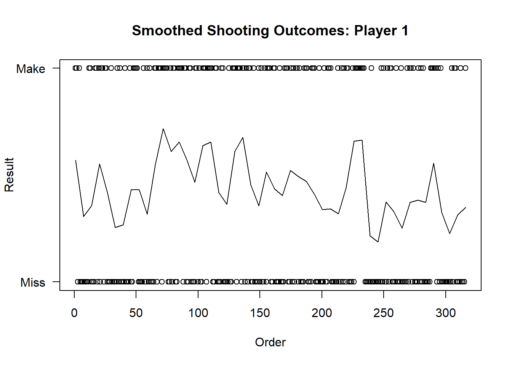
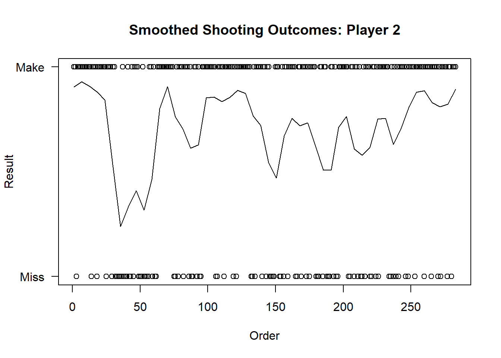
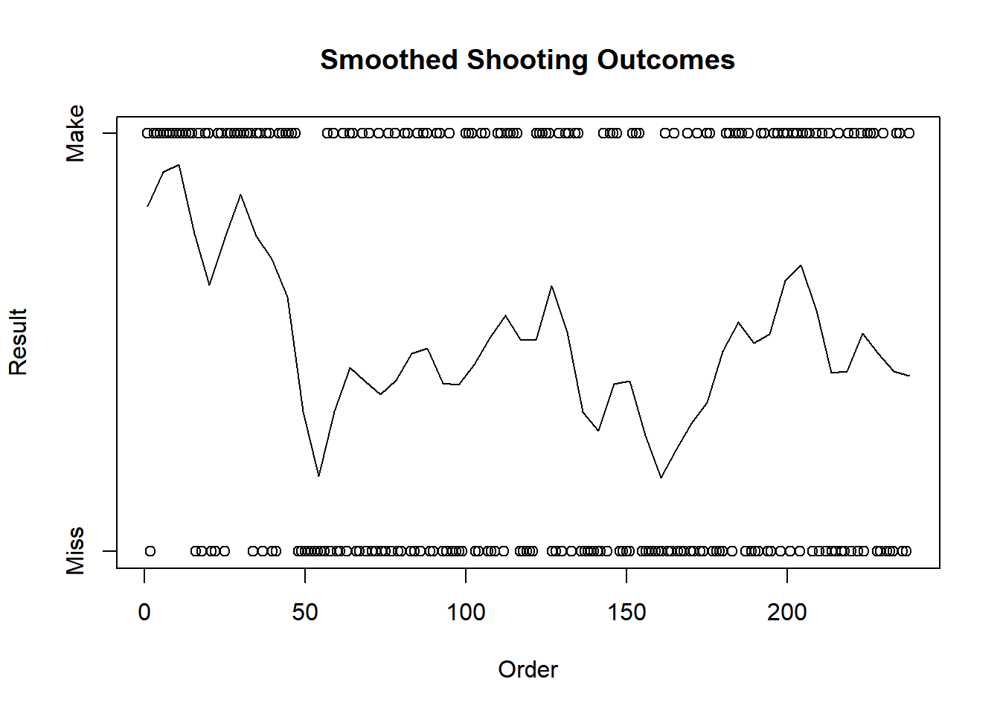
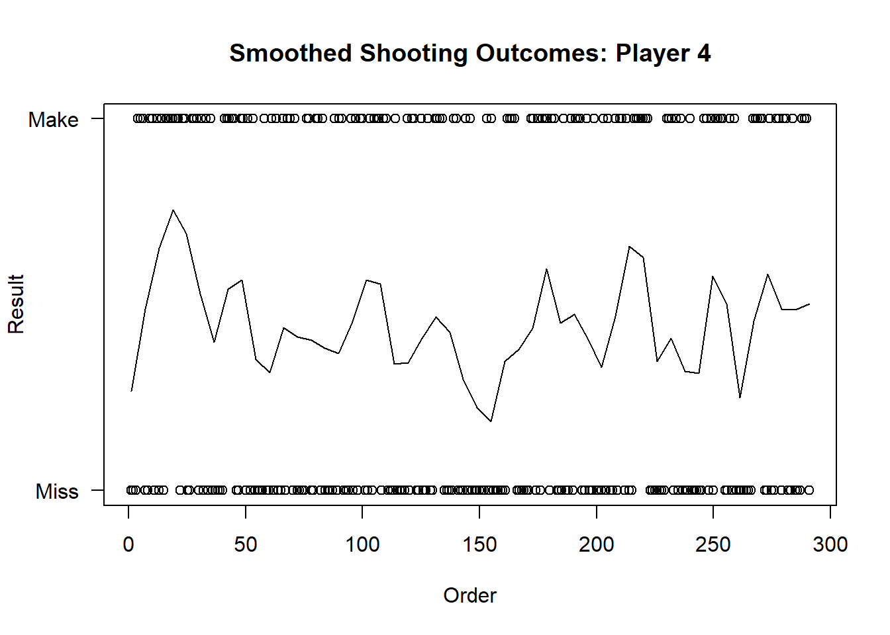

Chapter 5 Exploratory Data Analysis
5.0.0.1 Exploratory Data Analysis
The following exploratory plots examine how consistent the probability of a made shot is, using a loess smooth curve on the binary outcomes. We present these smoothed plots for four high-usage basketball players at Duke University, and we leave the others in the Appendix. Each plot represents a single player’s ordered shooting outcomes for a single season. These plots do not account for the amount of time in between shots, but simply shot order and outcome.
load(file="../rdatafiles/allgameshots.RData")
id4 <- 601140
id3 <- 603106
id2 <- 842301
id1 <- 887665
playerseasons <- matrix(
c(id1, 2016,
id2, 2015,
id3, 2014,
id4, 2015
),ncol=2,byrow = TRUE
)
colnames(playerseasons) <- c("globalplayerid" ,"season")plotshottime <- function(playerid, season){
allgameshots_sub <- allgameshots[allgameshots$globalplayerid==playerid & allgameshots$season==season,]
if(nrow(allgameshots_sub) < 10){
plot(0,0,type="n", yaxt="n",xaxt="n", ylab="",xlab="")
text(0,0,label="Not Enough Data", cex=2)
}else{
Y <- allgameshots_sub$result #zoo::rollmean((allgameshots_sub$result), 4)
X <- 1:length(Y)
scatter.smooth(X,Y,span=20/length(Y), main = paste0("Smoothed Shooting Outcomes"),
yaxt="n",ylab="Result",xlab="Order")
axis(side=2,at=c(0,1),labels=c("Miss","Make"))
}
}
maxseason <- allgameshots %>% group_by(globalplayerid, season) %>% summarize(num=n()) %>% group_by(globalplayerid) %>% mutate(m=max(num)) %>% filter(num==m) %>% as.data.frame()Warning: package 'bindrcpp' was built under R version 3.3.3for(i in 1:nrow(playerseasons)){
r <- playerseasons[i,]
plotshottime(r[[1]],r[[2]])
}
We can see that the plots vary in the consistency of their made shots, since they all contain spikes and trends. For example, the third plot initially has a very high success rate, which quickly falls to the middle after about thirty shot attempts, and the second plot has a noticeable upward trend in shot success beginning around shot number one hundred fifty.
We investigate the shooting outcome using Bayesian models, and show the results in the next section.